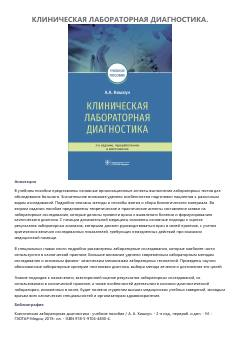

КЛKlinik laborator diagnostika asoslari va tahlil natijalarini baholash bo'yicha qo'llanma.
Ushbu o'quv qo'llanmada bemorlarni tekshirish uchun laboratoriya testlarini o'tkazishning asosiy tashkiliy jihatlari, bemorlarni tayyorlash xususiyatlari hamda biologik materiallarni yig'ish usullari batafsil bayon etilgan. Shuningdek, zamonaviy laboratoriya tadqiqot usullari, fizik-kimyoviy mexanizmlar va dalillarga asoslangan tibbiyot nuqtai nazaridan natijalarni baholash yondashuvlari ko'rsatilgan. Kitob tibbiyot oliy o'quv yurtlari talabalari, yosh shifokorlar va sog'liqni saqlash tashkilotchilari uchun mo'ljallangan.